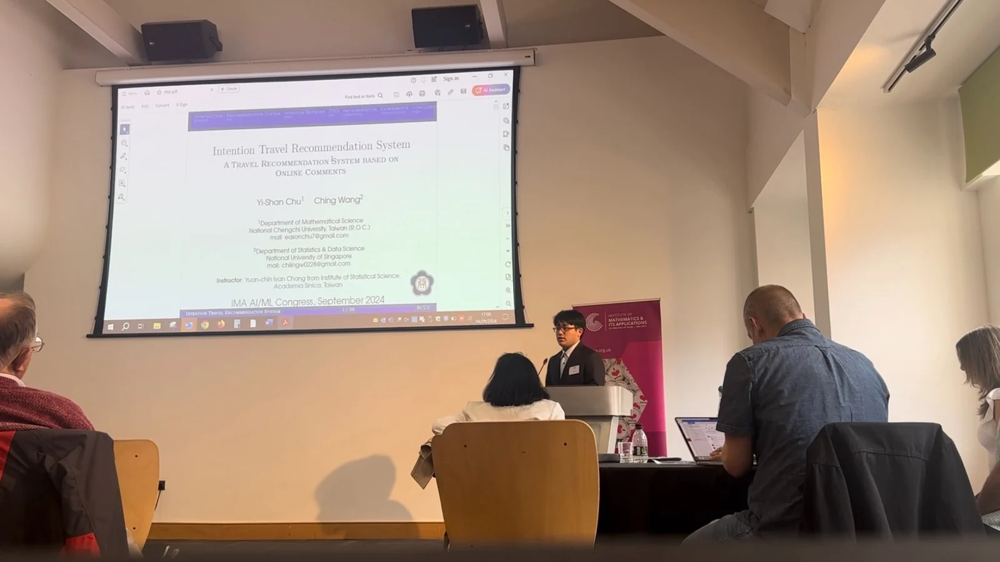
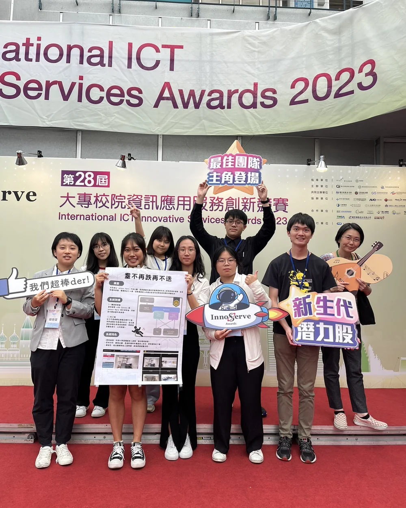
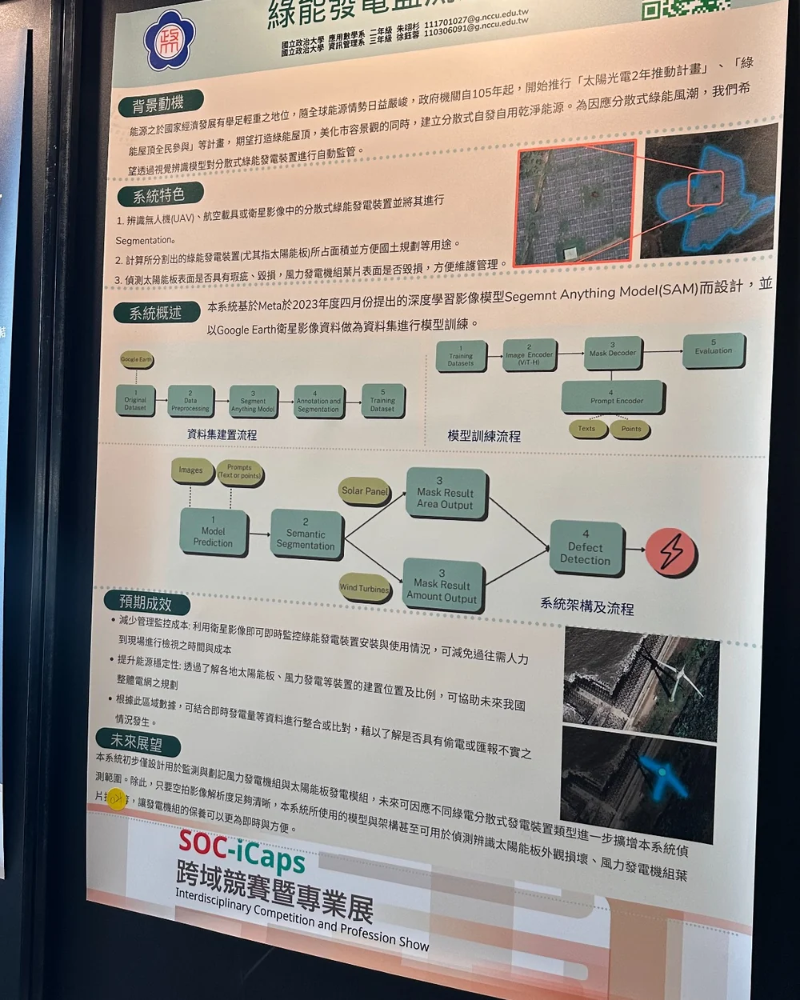

Learning theory & statistical inference
Model capacity, generalization, sample complexity, spectral testing, and identifiability.
Current roles
My main research interests are theoretical machine learning, statistical learning, spectral methods, and geometric views of neural networks. I also work on remote sensing, computer vision, UAV localization, edge AI, and scientific computing.
Research interests
My projects span both theory and applications. Across them, I am particularly interested in what can be learned from finite data, how structure can be identified or used in models, and how methods behave under practical constraints.
Model capacity, generalization, sample complexity, spectral testing, and identifiability.
Spectral and geometric structure for understanding representation, architecture, and initialization.
Remote sensing, UAV imagery, edge computing, computer vision, and deployment-oriented model development.
Selected work
An NSTC-funded study of KAN model capacity, generalization, and sample complexity.
STATISTICS · 2026–Current work on eigenstructure-based tests and finite-sample identifiability.
NEURAL GEOMETRY · 2026A geometry-aware initialization method for sigmoidal MLPs; the corresponding work was accepted at ACCV 2026.
REMOTE SENSING · 2024–2026Transformer-based satellite-image segmentation developed from a TASA internship and later published in TAO.
COMPUTER VISION · 2025–2026A vision-based localization workflow that matches UAV observations with satellite imagery to estimate position without relying on GPS.
Publications & honors
Our paper "From Dataset Spectral Geometry to Network Weights: A Geometry-Aware Initialization for Sigmoidal MLPs in Image Classification" is accepted by ACCV 2026.
First / corresponding-author journal paper on post-disaster segmentation ‘Post-disaster affected area segmentation with vision transformer (ViT)-based model using Sentinel-2 and Formosat-5 imagery‘.
First Prize, System-Holdings Student Prize (Best Student Paper).
Research in practice



Contact